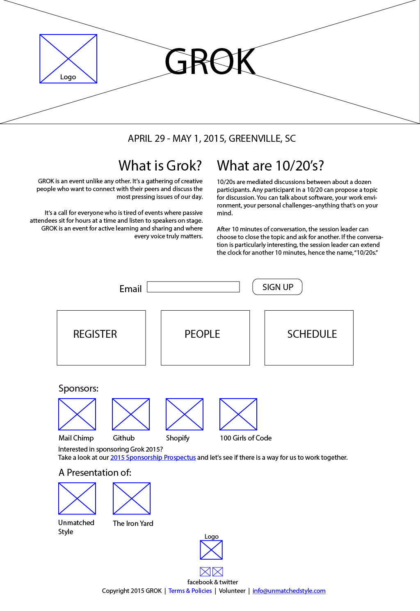
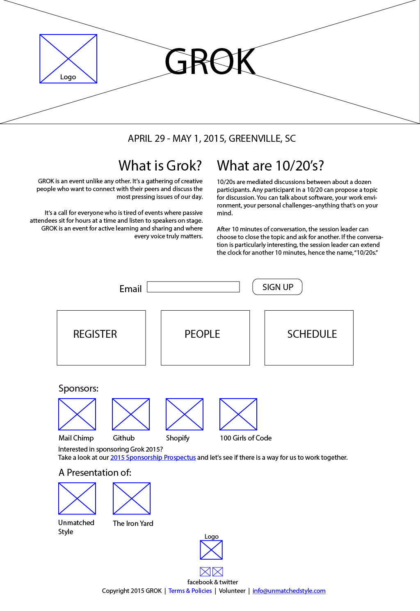

Project Description:
GROK is an event unlike any other. It’s a gathering of creative people who want to connect with their peers and discuss the most pressing issues of our day.
The term GROK was originally coined by Robert A. Heinlein in his book, Stranger in a Strange Land. Stranger in a Strange Land tells the story of a boy raised by Martians who must then learn how to be a human again. In the story, ‘Grok’ is a Martian word that means to understand something or someone with utter completeness and empathy. In the spirit of Heinlein’s idea, GROK is designed to promote and encourage interaction and engagement between participants, so don’t expect to sit passively and listen to a speaker.
Instead of listening to speakers, GROK is built around group discussions called 10/20s.
10/20s are mediated discussions between about a dozen participants. Any participant in a 10/20 can propose a topic for discussion. You can talk about software, your work environment, your personal challenges–anything that’s on your mind.
After 10 minutes of conversation, the session leader can choose to close the topic and ask for another. If the conversation is particularly interesting, the session leader can extend the clock for another 10 minutes, hence the name, “10/20s.”
Project Scope:
UX: Site architecture redesign and mapping.
- Thumbnails
- Wireframes
UI: Redesign of the existing website and its components:
- Introduction
- Speaker Profiles Schedule
- Sponsors
- Registration
Development: HTML, CSS and JS templates for all page designs.
Discovery:
COMPANY DESCRIPTION:
Think of GROK as an “unconference” - “a small-batch event.” GROK is unlike most conferences in a number of great ways. Most conferences focus on providing headline speakers to bring in a crowd. The crowd is usually separated from the presenters by a stage and dark lighting that doesn't allow the presenter and the crowd to interact. GROK doesn't run this way.
There are times when there is a single speaker and everyone else is listening. But those talks and demonstrations were sprinkled into the schedule as a way to break up the core part of the event; talking to each other in small groups.
GROK EVENT PRIMARY GOALS/OBJECTIVES
The website for GROK seeks to drive event registrations by quickly and clearly explaining the concept of the event, what makes it unique from other “web” conferences, and what attendees can expect to take away from the event.
TARGET AUDIENCE/WHAT INFORMATION/CONTENT IS THE AUDIENCE LOOKING FOR?
The primary audience for GROK are creative professionals: designers, developers, musicians, artists, writers, etc., who are looking for an alternative to other large-scale events that feature well-known presenters in lecture or workshop formats, and instead prefer a small event where they can develop relationships and real conversations with other professionals.
COMPANY BRAND, PERSONALITY, AND CULTURE
The brand for GROK is that of an “un-conference.” Fun, quirky, personable, and doesn’t take itself too seriously, yet possesses a level of professionalism and quality that sets it apart from other events. Event swag, signage, and other materials are cleanly, professionally designed, and show an appreciation to detail. Word-of-mouth about this event is positive and strong, and most previous attendees highly recommend the event to others.
Sketches


Wireframes
 
